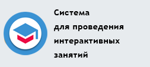

Санкт-Петербургский национальный исследовательский университет информационных технологий, механики и оптики
Электронная информационно-образовательная среда


Новости
Дистанционные курсы
Расписание аттестаций
Информация авторам
Ответы на вопросы
Рейтинг студентов
Документация
Центр ДО
Ссылки
Дистанционные курсы
Расписание аттестаций
Информация авторам
Ответы на вопросы
Рейтинг студентов
Документация
Центр ДО
Ссылки
| Наши партнеры: | |
|---|---|
|
|
|
| Новости |
|
02.03.2015
В сиcтеме "AcademicNT" проведен I тур VI Всероссийской студенческой олимпиады по основам технологии приборостроения. В олимпиаде приняли участие студенты 19 высших учебных заведений Арзамаса, Чистополя, Омска, Волгограда, Красноярска, Оренбурга, Москвы, Тольятти, Нижнего Новгорода, Санкт-Петербурга, Новосибирска, Ульяновска, Орла, Кирова, Новочеркасска. 23.02.2015
В системе AcademicNT проведена XVI Олимпиада по кибернетике среди школьных команд - "Cyber-Net 2015". В финальном туре Олимпиады участвовало 26 команд. Первое место заняла команда ФМЛ №30 "# 11-1-G" в составе: Гаевой Никита, Куликов Алексей, Мягков Константин, второе место заняла команда ФМЛ №239 "Игэтибадэф" в составе: Злотников Леонид, Кравченко Евгений, третье место заняла команда ФМЛ №30 "# 11-12-R" в составе: Елизаров Никита, Петров Степан, Романова Полина. Призерам были вручены подарки от партнеров олимпиады - компаний ELCOM и Dr.Web. 11.02.2015
В системе открытого онлайн-обучения "ITMOcourses" 23 февраля 2015 года стартует электронный курс: "Создание веб-интерфейсов с помощью HTML и CSS". Базовый курс по созданию веб-интерфейсов, предназначенный для новичков с нулевыми знаниями в области HTML и CSS. Этот курс будет полезен для школьников старших классов, студентов технических специальностей и для всех людей, которые интересуются вебом или планируют начать карьеру в этой индустрии. Запись на курс будет осуществляться до 8 марта. 04.01.2015
В системе открытого онлайн-обучения "ITMOcourses" 12 января 2015 года стартуют электронные курсы:
05.11.2014
В системе открытого онлайн-обучения "ITMOcourses" 17 ноября 2014 года стартует электронный курс: "Основы электромеханических систем". Данный курс является упрощённой версией дисциплин «Электромеханические и мехатронные системы (основы управления)» и «Теория электропривода. Замкнутые системы», преподаваемых в Университете ИТМО. Также данный курс может быть рекомендован любителям робототехники, так как содержит описание принципов и основ построения систем управления электродвигателями. В состав курса входят видеолекции, включающие опросы по отдельным разделам, упражнения, интерактивные модели для самоподготовки и интерактивные задания для формирования и контроля навыков решения практических задач. Запись на курс будет осуществляться до 30 ноября. 22.10.2014
В системе открытого онлайн-обучения "ITMOcourses" 3 ноября 2014 года стартуют электронные курсы:
01.10.2014
В системе открытого онлайн-обучения "ITMOcourses" 13 октября 2014 года стартуют электронные курсы:
17.09.2014
В системе открытого онлайн-обучения "ITMOcourses" 29 сентября 2014 года стартует электронный курс: "Введение в технологии веб-программирования (Javascript)" . Курс ориентирован на широкий круг слушателей, может быть интересен и студентам вузов и просто всем желающим, тем кто делает первые шаги в освоении технологий веб-программирования. Курс включает в себя 6 модулей и рассчитан на 6 недель. Обучение проводится на безвозмездной основе. Запись на курс будет осуществляться до 12 октября. 10.09.2014
В системе открытого онлайн-обучения "ITMOcourses" 22 сентября 2014 года стартуют электронные курсы:
По завершении обучения выдается сертификат за подписью автора курса. Для студентов, проходящих обучение по схожим дисциплинам в Университете ИТМО, сертификат может служить основанием для перезачета результатов обучения. Запись на курсы будет осуществляться до 5 октября. Обучение проводится на безвозмездной основе. К участию приглашаются все желающие Студенты и сотрудники НИУ ИТМО могут войти в систему, воспользовавшись логином и паролем от своей учётной записи в AcademicNT. 21.04.2014
В системе открытого онлайн-обучения "ITMOcourses" стартовали три новых электронных курса, разработанных преподавателями НИУ ИТМО:
23.02.2014
В системе AcademicNT проведена XV Олимпиада по кибернетике среди школьных команд - "Cyber-Net 2014". В финальном туре Олимпиады участвовала 31 команда. Первое место заняла команда ФТШ "copterhunters" в составе: Кравченко Д.С., Лабутин И.Н., Сычев С.К., второе место заняла команда Лицея № 533 "Наследие ЗИМа!" в составе: Дроздов А.В., Немилов М.А., Сотников С.В., третье место заняла команда Лицея № 8 "Abuse claws" (г. Сосновый Бор) в составе: Козий А.А., Привалихин А.А., Федорченко А.О. Призерам были вручены подарки от партнеров олимпиады - компаний ELCOM и Dr.Web. 17.02.2014
В системе открытого онлайн-обучения "ITMOcourses" стартовало два электронных курса, разработанных преподавателями НИУ ИТМО:
17.02.2014
В сиcтеме "AcademicNT" проведена международная Интернет-олимпиада по "Основам технологии приборостроения". В олимпиаде приняли участие студенты 12 высших учебных заведений Уфы, Вятки, Казани, Новочеркасска, Тольятти, Арзамаса, Пензы, Санкт-Петербурга, Ростова-на-Дону, Луганска. 19.12.2013
Определены победители конкурса преподавателей, в рамках которого анализировались итоги деятельности в весеннем семестре 2012/2013 уч. года. В частности, оценивались такие показатели, как:
Список победителей конкурса опубликован здесь. 17.12.2013
Подведены итоги конкурса "Разработка расширения для системы открытого онлайн-обучения semanticNT". Поддержку получили следующие проекты:
04.12.2013
В пятницу, 6 декабря 2013 года, центр дистанционного обучения проводит семинар на тему "Конфигурация дистрибутива Debian GNU/Linux, работа в консоли, основные консольные команды". На семинаре планируется рассмотреть следующие вопросы: система ввода/вывода, система безопасности, пользователи и группы, сеть, пакетный менеджер APT, установка программного обеспечения из исходных кодов. Ведет семинар к.т.н., доцент Скшидлевский Антон Алексеевич. Место проведения - аудитория 101, время начала - 18:30, продолжительность - 1,5-2 часа. Приглашаем всех желающих. 12.11.2013
В пятницу, 15 ноября 2013 года, центр дистанционного обучения проводит семинар на тему "Начальная настройка дистрибутива Debian GNU/Linux, работа в консоли, основные консольные команды". На семинаре планируется рассмотреть следующие вопросы: уровни загрузки системы, процессы, файловая система, информация о системе, дата и время, локализация, сеть, система безопасности, пользователи и группы, система ввода/вывода, пакетный менеджер APT, командный интерпретатор bash. Ведет семинар к.т.н., доцент Скшидлевский Антон Алексеевич. Место проведения - аудитория 101, время начала - 18:30. Приглашаем всех желающих. 25.10.2013
Центр дистанционного обучения НИУ ИТМО при поддержке компании ЭЛКОМ объявляет конкурс на разработку расширения для системы открытого онлайн-обучения semanticNT. К участию в конкурсе допускаются все студенты и аспиранты НИУ ИТМО. Лучшие работы получат финансирование - призовой фонд конкурса составляет 100 000 руб. Подробности здесь. 19.09.2013
В Дубовом зале НИУ ИТМО состоялось очередное заседание межведомственной рабочей группы по развитию электронного обучения, дистанционных образовательных технологий при реализации образовательных программ в образовательных учреждениях, которое было посвящено обсуждению вопросов применения нового нормативно-правового обеспечения использования электронного обучения в образовательных учреждениях, предложений реализации проектов развития электронного образования, в частности проектов по сетевой форме реализации образовательных программ с применением электронного обучения. В заседании приняли участие заместитель Министра образования и науки Российской Федерации Климов Александр Алексеевич, директор Департамента государственной политики в сфере высшего образования Минобрнауки России Соболев Александр Борисович, депутат Государственной Думы Федерального Собрания Российской Федерации Смолин Олег Николаевич. С докладом «Актуальный концепт повышения доступности высшего инженерного образованием и мотивации обучающихся с применением ЭО, ДОТ» на заседании выступил ректор НИУ ИТМО Васильев Владимир Николаевич. 23.04.2013
Инструктаж ответственных от кафедр по работе в системе AcademicNT состоится 23 и 25 апреля 2013 года в аудитории 101 (ЦДО), начало в 17 часов. 23.02.2013
В системе AcademicNT проведена XIV Олимпиада по кибернетике среди школьных команд - "Cyber-Net 2013". В финальном туре Олимпиады участвовало 29 команд. Первое место заняла команда ФМЛ № 239 "Лалки" в составе: Беляков М.А., Грачев П.Г., второе место заняла команда ФМЛ № 30 "# 11-1-S" в составе: Королева Я.К., Хабаров М.В., Шовкопляс Г.Ф., третье место поделили две команды - Гимназия № 261 "Donum repentinum": Баталяхин Т.Э., Горохов Н.Д. и ГБОУ ДОД "Интеллект": Данилов Т.А. (Лицей № 3, г. Гатчина), Краев А.В. (СОШ № 3, г. Кингисепп), Мамаев Д.А. (Лицей № 8, г. Сосновый Бор). Призерам были вручены подарки от партнеров олимпиады - компаний ELCOM и Dr.Web. 19.02.2013
В сиcтеме "AcademicNT" проведена Интернет-олимпиада по "Основам технологии приборостроения". В олимпиаде приняли участие студенты 8 высших учебных заведений Уфы, Кирова, Новочеркасска, Чистополя, Новосибирска, Санкт-Петербурга. 05.09.2012
В разделе "Информационные ресурсы" сиcтемы "AcademicNT" опубликованы ссылки на библиотечные системы, работа с которыми разрешена с IP-адресов Университета. 10.05.2012
Заполнение индивидуальных планов преподавателей НИУ ИТМО на 2012/2013 учебный год будет осуществляться в электронной форме в сиcтеме "AcademicNT". Инструмент для создания и заполнения индивидуального плана добавлен в раздел "Портфолио пользователя". 06.03.2012
В раздел "Мониторинг" добавлен пункт меню "Ведомости", содержащий таблицу со списком неутвержденных ведомостей по дисциплинам, где пользователь является тьютором. Название дисциплины является ссылкой на страницу текущего контроля электронного журнала. Использование данного интерфейса упрощает навигацию по электронному журналу при выставлении баллов в течение семестра. 23.02.2012
В системе AcademicNT проведена XIII Олимпиада по кибернетике среди школьных команд - "Cyber-Net 2012". В очном туре Олимпиады участвовало 13 команд. Первое место заняла команда "10-1-S" (ФМЛ № 30,Санкт-Петербург). Призерам были вручены подарки от партнеров олимпиады - компаний ELCOM и Dr.Web. 13.02.2012
В сиcтеме "AcademicNT" проведена Интернет-олимпиада по "Основам технологии приборостроения". В олимпиаде приняли участие студенты 9 высших учебных заведений Ульяновска, Казани, Кирова, Москвы, Санкт-Петербурга, Уфы, Чистополя. 26.01.2012
Инструктаж (вторая очередь) ответственных от кафедр за ввод рабочих программ дисциплин в информационную систему состоится 26 января 2012 года в аудитории 101 (ЦДО), начало в 16 часов. Список участников:
19.01.2012
Инструктаж (первая очередь) ответственных от кафедр за ввод рабочих программ дисциплин в информационную систему состоится 19 января 2012 года в аудитории 101 (ЦДО), начало в 16 часов. Список участников:
16.11.2011
Для повышения качества модулей системы "AcademicNT" в системе введена новая иконка [!] - "Добавить замечание", при щелчке по которой появляется всплывающее окно для написания замечания по текущей странице. Оно будет просмотрено администратором системы. 21.10.2011
В сиcтеме "AcademicNT" проведен командный блиц-турнир 7 Всероссийской студенческой олимпиады по оптотехнике. В соревновании приняли участие команды из Волгограда, Ижевска, Казани, Киева, Москвы, Новосибирска, Самары, Санкт-Петербурга, Томска. 23.02.2011
В системе AcademicNT проведена XII Олимпиада по кибернетике среди школьных команд - "Cyber-Net 2011". В очном туре Олимпиады участвовали 25 команд. Первое место заняла команда "The End" (ФМЛ № 239,Санкт-Петербург) в составе: Малиновский И.К., Терехов А.Ю., Никитин Д.А. Призерам были вручены подарки от партнеров олимпиады - компаний ELCOM и Dr.Web. 14.02.2011
В сиcтеме "AcademicNT" проведена международная Интернет-олимпиада по основам технологии приборостроения. В олимпиаде приняли участие студенты 16 высших учебных заведений Казани, Минска, Караганды, Москвы, Санкт-Петербурга, Владимира, Новосибирска, Коврова, Орла. 1.12.2010
Центром дистанционного обучения открыта единая веб-служба авторизации пользователей корпоративных сетевых ресурсов университета. Веб-служба позволяет авторизовывать пользователей по параметрам учетных записей интегрированной базы данных университета. По вопросам использования службы просим обращаться в центр дистанционного обучения или по адресу de@mail.ifmo.ru. 26.10.2010
Обновлен модуль "Портфолио". Доступ к модулю осуществляется по ссылке "Портфолио пользователя" главного меню. Для доступа к портфолио другого сотрудника необходимо использовать пункт "Портфолио" раздела "Мониторинг" системы "AcademicNT" 23.02.2010
В системе AcademicNT проведена XI Олимпиада по кибернетике среди школьных команд - "Cyber-Net 2010". В очном туре Олимпиады участвовали 31 команда из Петербурга, Петрозаводска, Гатчины, Томска. Первое место заняла команда ФМЛ 366 (ФМЛ366-Usavich) в составе: Мейнстер Д.Л., Абдрашитова Ю.С., Веневцев И.Д. Призерам были вручены подарки от партнеров олимпиады - компаний ELCOM и Dr.Web. 12.02.2010
В сиcтеме "AcademicNT" проведена международная Интернет-олимпиада по "Основам технологии приборостроения". В олимпиаде приняли участие студенты 14 высших учебных заведений Казани, Караганды, Москвы, Санкт-Петербурга, Северодвинска, Тольятти, Ярославля. 8.12.2009
Подведены итоги заочного тура XI Открытой олимпиады Санкт-Петербурга по кибернетике среди школьных команд "Cyber-Net 2010". В заочном туре Олимпиады приняли активное участие 46 команд средних и средних специальных учебных заведений из Гатчины, Петербурга, Петрозаводска, Томска, Хабаровска. В феврале 2010 года планируется провести очный тур. 30.10.2009
В сиcтеме ДО "AcademicNT" проведен Командный блиц-турнир III тура 5 Всероссийской открытой студенческой олимпиады по оптотехнике. 1.10.2009
Открыта регистрация для участия в XI Открытой олимпиады Санкт-Петербурга по кибернетике среди школьных команд "Cyber-Net 2010". В октябре в системе AcademicNT проводится тренировочная сессия. 24.05.2009
Проведена десятая Олимпиада по кибернетике среди школьных команд "Cyber-Net 2009". За время Олимпиады прислано участниками и обработано системой автоматической проверки 172 решения. I место заняла команда ФТШ при ФТИ им. А.Ф.Иоффе (PTS-3D) в составе: Кравчук П.А., Офицеров Н.А., Соболев А.И. 30.04.2009
В системе AcademicNT проведен заочный тур олимпиады по кибернетике среди школьных команд "Cyber-Net 2009". В нем приняли участие 45 команд средних и средних специальных учебных заведений из Астаны, Балаково, Брянска, Волхова, Гатчины, Набережных Челнов, Петербурга, Петрозаводска, Петропавловска, Пикалево, Сыктывкара, Таллина, Тараза, Тольятти, Ухты, Хабаровска. 30.03.2009
В системе дистанционного обучения введен новый сервис для родителей студентов, которые теперь смогут оперативно получать отчеты об учебных достижениях своих родственников, обучающихся в нашем Университете. 25.02.2009
При входе в систему добавлена возможность выбора протокола передачи данных. Это позволяет работать с системой как по протоколу HTTPS, так и по HTTP. 24.02.2009
В системе AcademicNT добавлен новый инструмент - "Опросы". 11.02.2009
На основании положения о балльно-рейтинговой системе оценивания результатов модульного обучения сформирован и опубликован на сайте системы дистанционного обучения Университета топ-рейтинг студентов по факультетам за текущий учебный год, обновление которого происходит ежедневно. 27.01.2009
В системе AcademicNT введен механизм оповещения пользователей о новых и непрочитанных сообщениях. 03.12.2008
Центральный орган Системы добровольной сертификации информационно-коммуникационных технологий в образовании (Система ИНКОМТЕХСЕРТ) завершил сертификацию Системы дистанционного обучения "AcademicNT", версия 1.0. Сертификат соответствия Системы ИНКОМТЕХСЕРТ от 01.12.2008 г. № РOCC RU.04ИК.П000016. 15.11.2008
В системе AcademicNT республиканским научно-практическим центром "ДАРЫН" проведена первая Президентская олимпиада по математике, физике, химии и биологии среди учащихся общеобразовательных учебных заведений Республики Казахстан. Олимпиада проводилась на двух языках и в ней приняли участие 300 школьников из шестнадцати областей Казахстана. 03.09.2008
Информационно-образовательная среда "AcademicNT" - ПОБЕДИТЕЛЬ конкурса в рамках 10-го юбилейного всероссийского форума "Образовательная среда-2008" в номинации "Корпоративные системы дистанционного обучения". 17.07.2008
На странице сайта "Руководства" опубликованы руководства пользователей системы дистанционного обучения AcademicNT для групп безопасности "Администратор университета", "Преподаватель", " Методист", "Инструктор", "Студент". 25.05.2008
В системе AcademicNT проведено IX открытое первенство Санкт-Петербурга по кибернетике среди школьных команд "Cyber-Net 2008". В Олимпиаде приняли участие 32 команды средних и средних специальных учебных заведений из Петербурга, Петрозаводска, Гатчины, Соснового бора. Задачи Олимпиады базировались на школьных курсах информатики, математики и физики. Реализация алгоритмов решения задач выполнялась на языках программирования C, Java, Pascal. Отладка программ производилась на удаленном сервере, проверка выполненных заданий осуществлялась автоматически. Результаты соревнований. Фотоотчет о проведении. 25.05.2008
Проведен этап региональной предметной олимпиады по информатике. Фотоотчет о проведении 05.04.2008
Проведен второй этап региональной предметной олимпиады по информатике. Фотоотчет о проведении 03.04.2008
В разделе сайта "Информация авторам" размещены примеры оформления элементов УМК. 26.03.2008
Проведен заключительный тур предметной интернет-олимпиады по математике и информатике. Фотоотчет о проведении 05.03.2008
В разделе сайта "Информация авторам" размещен инструментарий для проверки xml-документа на соответствие схеме. 29.02.2008
Проведен первый этап региональной предметной олимпиады по информатике. Фотоотчет о проведении 29.12.2007
В разделе сайта "Документы и технические руководства" размещена ссылка на пакет для разработки проверяющих серверов виртуальных лабораторий системы ДО AcademicNT. 26.11.2007
Сиcтема ДО "AcademicNT" использовалась для проведения мероприятий III тура Всероссийской студенческой олимпиады по оптотехнике. Командный блиц-турнир был организован в форме тестирования, а решение конкурсных задач для заочных участников - в форме практикума. 27.05.2007
Проведена межрегиональная предметная олимпиада по информатике, в которой приняли участие школьники Петербурга и Псковской области. Фотоотчет о проведении 21.04.2007
Сиcтема ДО использовалась для проведения регионального тура Всероссийской студенческой олимпиады по направлению "Оптотехника". Олимпиада проводилась в личном и командном зачете. Командный зачет был организован в форме тестирования, а личный - в форме практикума. 16.04.2007
С 25 марта по 12 апреля в системе ДО Университета в рамках самообследования проводился контроль остаточных знаний студентов по дисциплинам: Дискретная математика, Иностранный язык, Информатика, Культурология, Основы проектирования приборов и систем, Основы технологии приборостроения, Отечественная история, Экономика. Всего было протестировано 2120 студентов. 7.04.2007
В компьютерном классе ЦДО проведен второй этап региональной предметной олимпиады по информатике, в котором приняли участие 44 школьника. В аплет виртуальной лабораторной работы по информатике добавлена поддержка языка Basic. 29.03.2007
В рамках VII Всероссийской недели "Компьютерные технологии - школьникам России" в компьютерном классе ЦДО проведен 1-й тур олимпиады по информатике, в котором приняли участие 106 школьников из разных регионов Российской Федерации. 25.02.2007
В Университете проведен первый этап региональной предметной олимпиады по информатике, в котором приняли участие 134 школьника. Для поддержки олимпиады разработан сайт Интернет-олимпиады по информатике. Первая часть заданий олимпиады реализованы в виде тестов, вторая часть - посредством виртуальной лаборатории. Аплет виртуальной лабораторной работы по информатике позволяет задать переменные, необходимые для работы программы, выбрать стиль кодирования и использовать готовые конструкции выбранного стиля для написания программы. Корректно написанные программы можно отлаживать в пошаговом режиме или выполнять с возможностью остановки. Проверка написанной программы осуществляется автоматически. Поддерживаются языки программирования С и Pascal. 10.02.2007
С весеннего семестра 2007 года в систему ДО AcademicNT введены следующие изменения:
05.12.2006
Центром дистанционного обучения проведен первый этап факультатива "Некоторые специальные вопросы программирования на Java", во время которого с отобранными студентами проводились очные занятия в ЦДО. Во время второго этапа слушатели факультатива будут разрабатывать проекты для подачи на конкурс Java-разработчиков, проводимый корпорацией Sun Microsystems при официальной поддержке Министерства информационных технологий и связи РФ. Слушатели факультатива, выполнившие проект, будут допущены к экзамену на получение сертификата "Java Programmer" от корпорации SUN. 20.11.2006
В системе ДО СПбГУ ИТМО открыт форум "Диалог ректор-студент". На этом форуме Владимир Николаевич Васильев готов обсудить со студентами самые важные и актуальные вопросы, связанные с жизнью нашего университета. 7.10.2006
В системе дистанционного обучения Университета в разделе "Сетевое общение"/"Форумы" открыт интернет-семинар "Технологические и методические аспекты использования системы ДО" для обмена мнениями и опытом работы в среде системы дистанционного обучения, обсуждения ее возможностей и особенностей применения. 30.08.2006
Реализована возможность записи на аттестацию в 101 аудитории с сенсорных терминалов, расположенных в вестибюле Университета. 21.03.2006
В рамках VI Всероссийской недели "Компьютерные технологии - школьникам России" в компьютерном классе ЦДО проведен 1-й тур олимпиады по информатике, в котором приняли участие 83 школьника из 19 регионов Российской Федерации. 17.03.2006
Проведен отбор заявок, поступивших на конкурс на разработку и совершенствование электронных учебно-методических комплексов дисциплин для системы дистанционного обучения СПбГУ ИТМО в рамках ЦКП ДО на период весеннего семестра 2005-2006 учебного года. Отобраны заявки по следующим дисциплинам: - иностранный язык (каф. ИЯ, Маркушевская Л.П.); - когерентная оптика (каф. КЭиБМО, Тарлыков В.А.); - культурология (каф. Кл, Фомина Н.Н.); - метрология и электрические измерения (каф. ЭТиПЭМС, Шалин В.М.); - новые технологии приборостроения (каф. ТПС, Валетов В.А.); - основы технологии приборостроения (каф. ТПС, Валетов В.А.); - отечественная история (каф. ВИ, Ушаков Ю.Н.); - русский язык и культура речи (каф. ВИ, Кузьмина О.В.); - системы управления асинхронным электроприводом (каф. ЭТиПЭМС, Усольцев А.А.); - химия (каф. ФиТОС, Новиков А.Ф.). Руководители этих проектов должны в срок до 31 марта 2006 г. заключить договор. Обращаться в Центр дистанционного обучения (ауд.456) к Чежину М.С., тел. 232-59-14, e-mail:msch@cde.ifmo.ru. Срок сдачи выполненных проектов 15 июня 2006 года. 20.02.2006
Совет по Целевой комплексной программе "Развитие системы дистанционного обучения в ИТМО" (ЦКП ДО-ИТМО) объявляет на период весеннего семестра 2005-2006 учебного года конкурс проектов электронных учебно-методических комплексов (УМК) для системы дистанционного обучения университета. Заявки подаются по двум направлениям работ: 1. Разработка новых электронных УМК. В первую очередь принимаются заявки по дисциплинам: высшая математика, инженерная и компьютерная графика, начертательная геометрия, механика (сопротивление материалов, детали приборов, основы конструирования), физика (механика, электричество, магнетизм), философия, экономика. 2. Совершенствование существующих электронных УМК, предусматривающее повышение качества учебно-методических материалов. Должна быть предусмотрена разработка элементов мультимедиа с включением анимации, видео и звука. Для реализации мультимедиа элементов предпочтительно использование Мacromedia Flash. Реализация сложных интерактивных моделей и трехмерных пространств, моделирующих реальные процессы, с возможностью управления их поведением, разработка виртуальных лабораторных работ, выполненных на языке программирования Java. При разработке учебно-методических материалов должно быть обеспечены соответствие материалов руководству по разработке учебно-методического комплекса для системы дистанционного обучения. Консультация разработчиков электронных УМК осуществляется центром дистанционного обучения. Заявки для участия в конкурсе по установленной форме должны быть представлены в центр дистанционного обучения (ЦДО) в срок до 10 марта 2006 г. Экспертиза и отбор проектов проводятся Советом по ЦКП ДО с 11 по 15 марта 2006 г. Опубликование результатов конкурса - 16 марта 2006 г. Срок сдачи готового учебного материала - до 15 июня 2006 г. Прием и экспертиза УМК - до 30 июня 2006 г. Выполненные работы принимаются Советом по ЦКП ДО после размещения в среде системы ДО. За дополнительной информацией обращаться к Чежину М.С. (ауд. 456, тел. 232-59-14, e-mail: msch@cde.ifmo.ru). 17.10.2005
Проведен отбор заявок, поступивших на конкурс на разработку и совершенствование электронных учебно-методических комплексов дисциплин для системы дистанционного обучения СПбГУ ИТМО в рамках ЦКП ДО на период октябрь - декабрь 2005г. Отобраны заявки по следующим дисциплинам: - концепции современного естествознания (каф. ТПО, Потеев М.И.); - общая электротехника, электрические и магнитные цепи (каф. ЭТиПЭМС, Усольцев А.А.); - основы проектирования приборов и систем, ч.2 (каф. МТ, Грязин Д.Г.); - прикладная оптика (каф. ПиКО, Цуканова Г.И.); - теоретическая механика (каф. ТиПМ, Мельников В.Г.); - теория управления (каф. СУиИ, Сергеев К.А.); - технология конструкционных материалов (каф. ТПС, Медунецкий В.М.); - химия (каф. ФиТОС, Новиков А.Ф.). Руководители этих проектов должны в срок до 31 октября 2005 г. заключить договор. Обращаться в Центр дистанционного обучения (ауд.456) к Чежину М.С., тел. 232-59-14, e-mail:msch@cde.ifmo.ru. Срок сдачи выполненных проектов 15 декабря 2005 года. 20.09.2005
Совет по Целевой комплексной программе "Развитие системы дистанционного обучения в ИТМО" (ЦКП ДО-ИТМО) объявляет на период осеннего семестра 2005-2006 учебного года конкурс проектов электронных учебно-методических комплексов (УМК) для системы дистанционного обучения университета. Заявки для участия в конкурсе по установленной форме должны быть представлены в центр дистанционного обучения (ЦДО) в срок до 10 октября 2005 г. Экспертиза и отбор проектов проводятся Советом по ЦКП ДО с 11 по 15 октября 2005г. Основными критериями оценки проектов (заявок) являются:
Опубликование результатов конкурса - 17 октября 2005 г. Срок сдачи готового учебного материала - до 15 декабря 2005 г. Разработанные электронные учебно-методические материалы должны быть выполнены в форматах, определенных "Руководством по разработке учебно-методического комплекса для системы дистанционного обучения СПбГУ ИТМО". Выполненные работы принимаются Советом по ЦКП ДО после размещения в среде системы ДО. За дополнительной информацией обращаться к Чежину М.С. (ауд. 456, тел. 232-59-14, e-mail: msch@cde.ifmo.ru). 20.05.2005
В пятницу 20 мая в ЦДО состоялся 3-й выпуск на курсах "Constructing and Developing of Optical Systems" (преподаватель Лившиц Ирина Леонидовна), которые проводились для студентов шведских университетов. 12.05.2005
В компьютерном классе ЦДО (ауд. 101) с 16 по 25 мая 2005 года открыт доступ к полнотекстовой базе данных Института инженеров электроники и электротехники (IEEE) Время работы аудитории 101 - ежедневно, кроме субботы и воскресенья с 10.00 - 18.00. Материалы IEEE представляют треть объема всей мировой литературы по тематике электротехники и вычислительной техники. В библиотеке представлены материалы по атомной энергии, физике, телекоммуникациям, оптике, биометрии, радиологии, дистанционному зондированию и др. Она содержит научные статьи, исследования, материалы конференций, а также стандарты IEEE с 1952 г. 18.03.2005
Проведен отбор заявок, поступивших на конкурс на разработку электронных учебно-методических комплексов дисциплин для системы дистанционного обучения СПбГУ ИТМО в рамках ЦКП ДО на период февраль - июнь 2005г. Отобраны заявки по следующим дисциплинам: - введение в специальность (каф. ПиКО, Иванова Т.В.); - источники и приемники излучения (каф. ОЭПиС, Ишанин Г.Г.); - компьютерная обработка изображений (каф. ПиКО, Бурсов М.В.); - математические основы прогнозирования устойчивости объектов экономики и территорий (каф. МиПЧС, Жигулин Г.П.); - общая электротехника (каф. ЭТиПЭМС, Усольцев А.А.); - объектно-ориентированное программирование (С++) (каф. ИС, Павловская Т.А.); - основы конструирования и юстировки оптических приборов (каф. КиПОП, Латыев С.М.); - основы оптики (каф. ПиКО, Иванова Т.В.); - основы проектирования приборов и систем (каф. МТ, Грязин Д.Г.); - технология приборостроения (каф. ТПС, Валетов В.А.); - экспертные системы и логическое программирование (каф. ПКС, Муромцев Д.И.). Руководители этих проектов должны в срок до 31 марта 2005 г. заключить договор. Обращаться в Центр дистанционного обучения дистанционного обучения (ауд.456) к Чежину М.С., тел. 232-59-14, e-mail:msch@cde.ifmo.ru. Срок сдачи выполненных проектов 15 июня 2005 года. 16.03.2005
В рамках 5-й Всероссийской недели "Компьютерные технологии - школьникам России" в компьютерном классе ЦДО проведен 1-й тур олимпиады по информатике, в котором приняли участие 128 школьников из 24 регионов России. 07.02.2005
Совет по Целевой комплексной программе "Развитие системы дистанционного обучения в ИТМО" (ЦКП ДО-ИТМО) объявляет на период весеннего семестра 2004-2005 учебного года конкурс проектов электронных учебно-методических комплексов (УМК) для системы дистанционного обучения университета по дисциплинам: экономика, электроника и микропроцессорная техника, электротехника, физика, основы оптики. Кроме перечисленных дисциплин от выпускающих кафедр университета принимаются на конкурс заявки по базовым специальным дисциплинам направлений и специальностей подготовки. Заявки для участия в конкурсе по установленной форме должны быть представлены в центр дистанционного обучения (ЦДО) в срок до 1 марта 2005 г. Экспертиза и отбор проектов проводятся Советом по ЦКП ДО с 1 марта по 15 марта 2005г. Основными критериями оценки проектов (заявок) являются:
Опубликование результатов конкурса - 16 марта 2005 г. Срок сдачи готового учебного материала - до 15 июня 2005 г. Разработанные электронные учебно-методические материалы должны быть выполнены в форматах, определенных "Руководством по разработке учебно-методического комплекса для системы дистанционного обучения СПбГУ ИТМО". Выполненные работы принимаются Советом по ЦКП ДО после размещения в среде системы ДО. За дополнительной информацией обращаться к Чежину М.С. (ауд. 456, тел. 232-59-14, e-mail: msch@cde.ifmo.ru). 01.02.2005
ЦДО принимает заявки на проведение аттестаций в системе ДО ИТМО в весеннем семестре 2004/2005 учебного года. Заявка принимается в электронной форме в системе формирования расписания на курс размещенный в системе ДО. Правом подачи заявки обладает заведующий кафедрой. За дополнительной информацией обращаться к Чежину М.С. (ауд. 456, тел. 232-59-14, e-mail: msch@cde.ifmo.ru). 28.01.2005
Подведена статистика работы системы ДО в осеннем семестре 2004/2005 учебного года. В системе проходили аттестацию 4309 студентов, проведено 77137 сеансов аттестаций, что в 1,44 раза больше, чем за такой же период прошлого года. Большинство аттестаций (66261) пройдено из компьютерного класса ЦДО (ауд. 101), высокая пропускная способность которого была обеспечена автоматизированной системой формирования расписания. Вместе с тем в режиме обучения система активно использовалась и с внешних IP-адресов, в результате чего среднее время, проведенное студентами в системе, составило 17 академических часов. 12.10.2004
Проведен отбор заявок, поступивших на конкурс на разработку электронных учебно-методических комплексов дисциплин для системы дистанционного обучения СПбГУ ИТМО в рамках ЦКП ДО на период октябрь - декабрь 2004г. На конкурс поступила 21 заявка, из них отобраны заявки по следующим дисциплинам: - материаловедение. Технология КМ (каф. М, Приходько О.А.); - технология конструкционных материалов (каф. ТПС, Медунецкий В.М.); - новые технологии в приборостроении (каф. ТПС, Валетов В.А.); - электроника и микропроцессорная техника (каф. Э, Тогатов В.В.); - общая электротехника (каф. ЭТиПЭМС, Усольцев А.А.); - физика (каф. Ф, Колесников Ю.Л.); - химия (каф. ФиТОС, Новиков А.Ф.); - астрономия (каф. МиПЧС, Жигулин Г.П.); - концепции современного естествознания (каф. ТПО, Потеев М.И.); - объектно-ориентированное программирование (С++) (каф. ИС, Павловская Т.А.); - политология (каф. Соц., Орлова Л.Я.); - прикладная оптика (каф. ПиКО, Цуканова Г.И.); - теория механизмов, детали приборов и основы конструирования (каф. МТ, Киселев С.С.); - информационные технологии (каф. КОТ, Бурсов М.В.). Руководители этих проектов должны в срок до 18 октября 2004 г. заключить договор. Обращаться в Центр дистанционного обучения дистанционного обучения (ауд.456) к Чежину М.С., тел. 232-59-14, e-mail:msch@cde.ifmo.ru. Срок сдачи выполненных проектов 6 декабря 2004 года. 15.09.2004
Совет по Целевой комплексной программе "Развитие системы дистанционного обучения в ИТМО" (ЦКП ДО-ИТМО) объявляет на период осеннего семестра 2004-2005 учебного года конкурс проектов электронных учебно-методических комплексов для системы дистанционного обучения Университета по дисциплинам: - инженерная и компьютерная графика; - материаловедение; - технология конструкционных материалов; - электроника и микропроцессорная техника. От выпускающих кафедр университета принимаются на конкурс заявки по базовым специальным дисциплинам направлений и специальностей подготовки. Заявки для участия в конкурсе должны быть представлены в центр дистанционного обучения (ЦДО) в срок до 30 сентября 2004 г. Бланк заявки размещен на сервере дистанционного обучения. Дополнительная информация по конкурсу может быть получена в ЦДО. 05.07.2004
В элементах электронного УМК обеспечена поддержка отображения формул при помощи языка MathML. На сайте опубликована версия технического руководства по разработке учебно-методического комплекса для системы дистанционного обучения (версия 1.40 от 08.07.2004) в которой учтены новые возможности. 17.05.2004
Компьютерный класс ЦДО (ауд.101) работает до 25 июня. В июне из компьютерного класса открыт доступ ко всем обучающим материалам системы: тестам, учебникам, УМК. Эти материалы могут быть использованы для подготовки к экзаменам и зачетам. 20.04.2004
Студентам гр. 2120 Атаманчуку Е.В. и Урбановичу А.А. за попытку фальсификации результатов текущего контроля успеваемости в СДО объявлен выговор по университету с предупреждением об отчислении. ЦДО предупреждает студентов о недопустимости попыток фальсификации результатов. 2.04.2004
Открыт доступ из компьютерных классов ЦДО к учебно-методическим комплексам (УМК) по истории, теоретической механике, физике и химии. Для доступа к УМК студенты должны использовать логины и пароли такие же, как для входа в систему тестирования. Сотрудники университета могут получить логин и пароль в ЦДО. 31.03.2004
Проведен отбор заявок, поступивших на конкурс на разработку электронных учебно-методических комплексов дисциплин для системы дистанционного обучения СПбГУ ИТМО в рамках ЦКП ДО на период февраль - июль 2004г. Отобраны заявки по следующим дисциплинам:
30.03.2004
В связи с окончанием сроков первого этапа текущего контроля успеваемости лимиты времени работы в ауд.101 на май будут уменьшены в два раза. Просим соблюдать график аттестаций. 24.02.2004
Объявлен конкурс проектов на разработку электронных учебно-методических комплексов дисциплин для системы дистанционного обучения СПбГУ ИТМО в рамках ЦКП ДО на период февраль - июль 2004г. Необходимые документы приведены в разделе сайта "Информация авторам". 11.02.2004
Опубликован "Порядок прохождения аттестаций в системе дистанционного обучения СПбГУ ИТМО" 10.02.2004
Опубликована новая версия (1.06 от 30.01.2004) Руководства по разработке учебно-методического комплекса. 06.02.2004
Опубликована исправленная версия (1.0 от 06.02.2004) Технического руководства по разработке тестовых заданий. 28.01.2004
Во вторник (27.01.2004) состоялось заседание Ученого совета университета, на котором рассматривалась деятельность центра дистанционного обучения. Соответствующее решение ученого совета приведено в разделе Совет по ДО. 30.12.2003
Закончено проведение аттестаций в системе ДО в осеннем семестре 2003/2004 учебного года. За этот семестр с системой тестирования работал 3851 студент, проведено 53525 сеансов аттестаций, во время которых студентам было предложено ответить на 750476 вопросов. 29.12.2003
Подведены итоги работы авторов по разработке электронных учебно-методических комплексов дисциплин в период сентябрь - декабрь 2003г. Признана успешной разработка УМК по следующим дисциплинам:
28.10.2003
В понедельник 27 октября в ЦДО состоялся очередной выпуск на курсах, которые проводятся по заказу Комитета по образованию Администрации Санкт-Петербурга по программе "Проектирование, развертывание и администрирование компьютерной сети в образовательном учреждении". 13.10.2003
С 7 недели все аттестации в ЦДО проходят только в новом учебном классе (ауд.101). За первый день плановых занятий в новом классе проведено тестирование студентов 22 групп. 07.10.2003
В понедельник 6 октября состоялось торжественное открытие нового учебного центра. Фотоотчет об открытии. 04.10.2003
В разделе "Документы и руководства" опубликовано руководство пользователя компьютерной системой для проведения обучения и аттестаций (версия 3.0 от 14.09.2003). Данное руководство посвящено описанию новой версии подсистемы тестирования СДО СПбГУ ИТМО. Основные отличия новой версии связаны с расширенными возможностями по администрированию учебного процесса, увеличением количества форм и большим объемом получаемой статистической информации. В новой версии структура базы данных системы оптимизирована под структуру университета, увеличено количество ролей пользователей, расширен программный инструментарий. Руководство предназначено для преподавателей и сотрудников университета, использующих систему ДО в учебном процессе. 03.10.2003
6 октября ЦДО открывает новый учебный центр. Учебный центр целиком оснащен рабочими местами и серверами производства компании Sun Microsystems и рассчитан на одновременное обслуживание 60-ти пользователей. Разработка и реализация проекта создания учебного центра велась совместно с авторизованным партнером компании Sun Microsystems - Санкт-Петербургской компанией ЭЛКОМ, имеющей более, чем 10-летний опыт создания и сопровождения информационных систем на базе технологий компании Sun Microsystems. 01.10.2003
Подведены итоги конкурса на разработку электронных учебно-методических комплексов дисциплин в период сентябрь - декабрь 2003г. Были отобраны следующие заявки:
25.09.2003
В целях повышения информационной безопасности в системе ДО произведена замена логинов и паролей. Просьба всем сотрудникам университета, использующим систему ДО, получить новые логины и пароли. Обращаться в Центр дистанционного обучения (ауд.455) к Бабиной А.В., тел. 232-59-14, e-mail: annab@cde.ifmo.ru. 22.09.2003
Обновлена версия системы тестирования: расширен список ролей пользователей, добавлены и усовершенствованы программные инструменты по администрированию учебного процесса, обеспечен автоматический импорт данных из БД университета. 19.09.2003
30 сентября 2003 года (вторник) в 17ч. 20мин. в ауд. 455 (ЦДО) будет проведен инструктаж по работе с базой данных СДО. 09.09.2003
Опубликована обновленная версия (1.05 от 08.09.2003) Руководства по разработке учебно-методического комплекса. 29.07.2003
Опубликована новая версия (1.05 от 29.07.2003) Руководства по разработке учебно-методического комплекса. 30.05.2003
Опубликованы приказ Ректора № 88 - од от 20 мая 2003 года и "Положение о проведении текущего контроля успеваемости и промежуточной аттестации студентов в системе дистанционного обучения Санкт-Петербургского государственного института точной механики и оптики (технического университета)". 21.05.2003
Объявлен конкурс проектов на разработку электронных учебно-методических комплексов дисциплин для системы дистанционного обучения СПбГИТМО(ТУ) в рамках ЦКП ДО на период сентябрь - декабрь 2003г. |
 |
|  |
 |
 |
|
|
|
|
Вопросы и предложения
de@mail.ifmo.ru |
Последнее обновление
03 декабря 2015 г. |
|
|
|